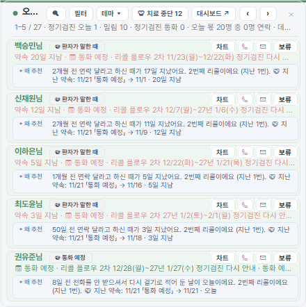

환자가 말한 「그때」를 놓치지 마세요
「3월에 할게요」라고 하신 분께는 3월에 먼저 전화하세요. 환자가 직접 말한 때는 가장 성공하기 쉬운 리콜이에요. 「저번에 3월에 하기로 하셨는데요」 한마디면 대화가 바로 이어져요.
단서는 이미 차트에 있어요
통화하거나 접수하면서 환자분이 하신 말 — 「이번 달은 바빠요」 「3월쯤부터 가능해요」 「방학 때 갈게요」 — 은 대부분 메모로 남아 있어요. 문제는 그 달이 되었을 때 아무도 다시 보지 않는다는 거예요.
현장에서는환자분이 먼저 말한 때라서, 그 달에 전화하면 「아 맞다, 기억해 주셨네요」 하시며 예약이 잘 잡혀요. 챙겨 줘서 고맙다는 말도 자주 들어요.
메모는 이렇게 남기세요
| 이렇게 적으면 다시 찾기 쉬워요 | 이렇게만 적으면 헷갈려요 |
|---|---|
| 내년 3월에 치료 받으러 오신대요 | 3월 |
| 4월에 다시 연락 주신대요 | 4월 이사 |
| 3월쯤 다시 전화 드리기로 함 | 바쁨 |
언제 + 무엇을 하기로(오신대요·연락·전화 드리기로)를 같이 적는 게 요령이에요.
그 달이 되면 이 말로
그대로 읽으면 되는 멘트○○님, 지난번에 3월쯤 치료 이어서 하시겠다고 하셔서 연락드렸어요. 이번 달 편하신 날 있으세요?
「예약하세요」가 아니라 환자분이 하신 말을 되돌려 드리는 거라, 영업 전화처럼 들리지 않아요.

자주 묻는 것
어떤 메모를 남겨야 하나요?
「3월에 오신대요」 「4월에 연락 주신대요」처럼 때와 함께 오신다·연락한다는 말을 같이 적어 두면 그 달에 다시 찾기 쉬워요.
데스크알리미로는 이렇게
덴트웹 히든메모에 적힌 「그때」를 데스크알리미가 읽어 두었다가, 그 달이 되면 리콜 카드로 올려 줘요. 따로 달력에 적지 않아도 되고, 카드에는 왜 추천과 그대로 읽을 첫마디가 같이 적혀 있어요.
데스크알리미 = 덴트웹 쓰는 치과 데스크 화면 구석에 뜨는 막대형 도우미예요. 덴트웹은 그대로 쓰고 옆에 하나만 더 띄워요.
올린 날 2026-11-23 · 고친 날 2026-11-23